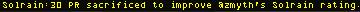

At the Optimus rank (level 50), pilots are granted a growing series of tools that supply information and abilities to be used to aid one's faction. Other pilots will increasingly rely on their faction's Optimus pilots for information that will help with planning larger scale operations. It is intended that these tools will provide the Optimus cadre of a faction with a crucial social role interacting with and leading other pilots in various teamwork activities.
Optimus commands may cost either experience points (xp) or Political Rating (PR) to use, or some combination of both. Experience at the Optimus rank is no longer required for promotion, and is used as another measure of factional standing, clout, or prestige. Each function is unique in its requirements, and details are provided in the description of each tool. For example, PR may simply be a requirement for access to some tools, rather than a cost for use. Missions for one's own faction, as well as other activities, act as a continuing source for xp and improving PR even at Optimus rank.
The following tools have been made accessible:
Production Boost Request Tool
Requirements: Be docked at a home faction station that produces the desired commodity or equipment. You must also have a home faction PR at least 20 and a flight registry other than "Pirate".
Command Syntax: "/prodboost 'name'", where 'name' is a piece of equipment or commodity.
Example: "/prodboost Duelist"
Result: the production of the commodity at that station will be doubled for a period of about two hours, assuming the necessary components to produce the requested item are present for the duration.
Production Efficiency Info Tool
Requirements: A minimum of 20 PR and any registry other than "Pirate".
Command Syntax: "/prodefc"
Result: A listing of the current production efficiency at each of your faction's stations will output in the chat window.
Ore Stocks Info Tool
Requirements: A minimum of 20 PR and any registry other than "Pirate".
Command Syntax: "/oredepots"
Result: A listing of your faction's existing Ore Depots will output in the chat window, with current ore stocks by type.

Political Rating Support Tool
Requirements: Be docked in a home faction station. Recipient must be docked in any TRI station and have PR below 90 in your faction. If the cost to use this tool would place you below 0 PR, your request will be denied.
Command Syntax: "/vouch 'pilotname'"
Result: Increase recipient's PR with your faction by 10.

Cost: 500000 xp plus a PR cost that varies based on recipient's faction and PR at time of vouch. PR cost is 20 for your own faction, 30 if from a faction other than your own, but doubled if the recipient is in disfavor (PR already below 0).Examples: For a pilot of your own faction with PR 38, /vouch will cost 20 PR. For a foreign pilot with PR -5 with your faction, /vouch will cost 60 PR.
Building Status Messages
Optimus pilots receive notifications from their faction if any of the faction's buildings come under attack or are destroyed. It is the duty of the Optimus to pass this information to other factional pilots and repel the attack.
Military Intel Map
This is a map screen tool showing which sectors have a foreign military presence, for use in coordinating PvP raids. Data for this tool will rely on beacon control by your faction, and on factional pilots flying Recon missions.